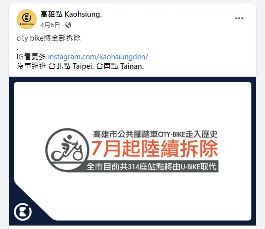

近期高雄市政府（韓國瑜市長執政時）與微笑單車廠商簽約，汰換掉 City Bike ，進而布建 YouBike 2.0，預計在 2020 年 7 月啟用。
高市環保局證實，C-Bike系統預計今年7月起，由YouBike接手，原系統將全面汰換並更新腳踏車，官員坦言新系統營運後，業者自負盈虧可減少市府財政負擔。

不得不說他們布建施工的速度真的很快，最近放學回家都能注意到人行道上多處都被挖坑建置，而且我的活動圈附近居然也布建了！！！
我夢寐以求的願望終於實現了(?)，之前的 City Bike 常常是固定大站點，還要走一段路，YouBike 因為只有停車柱，輕便很多。